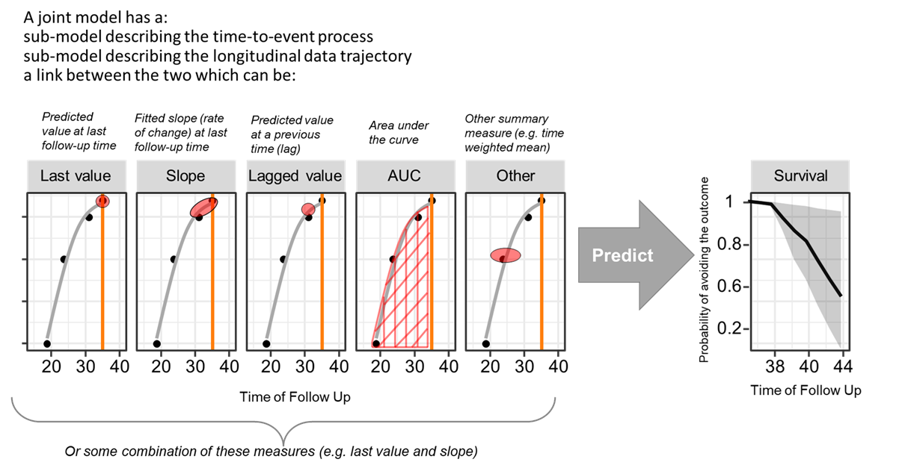
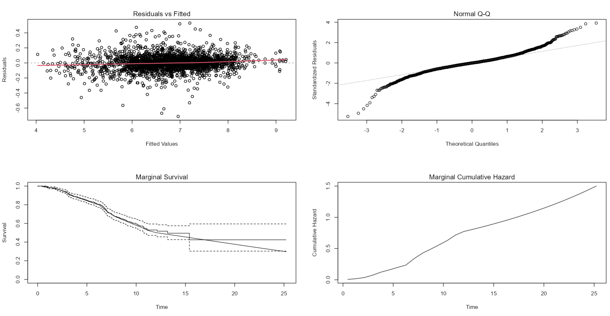
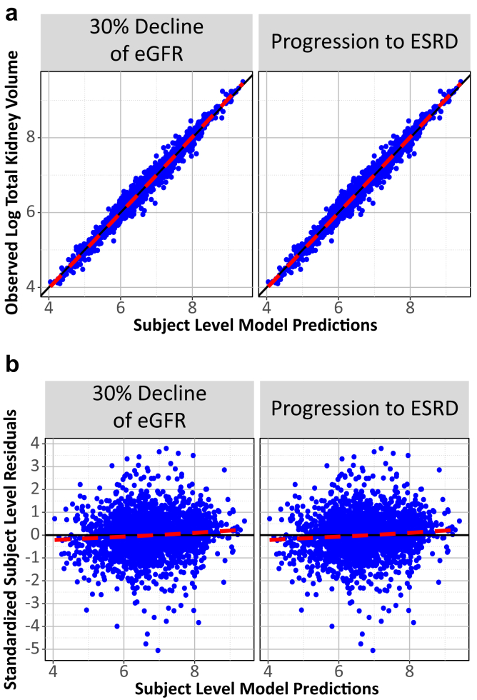
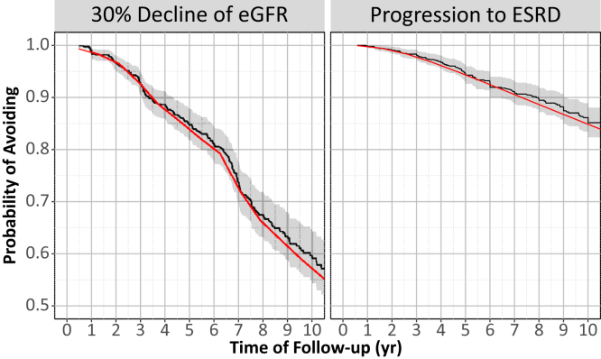
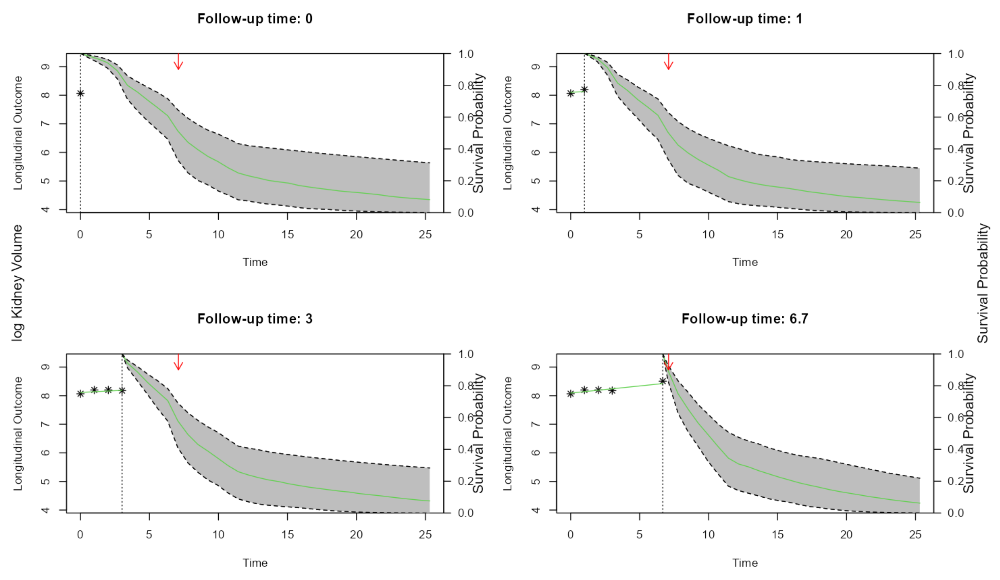
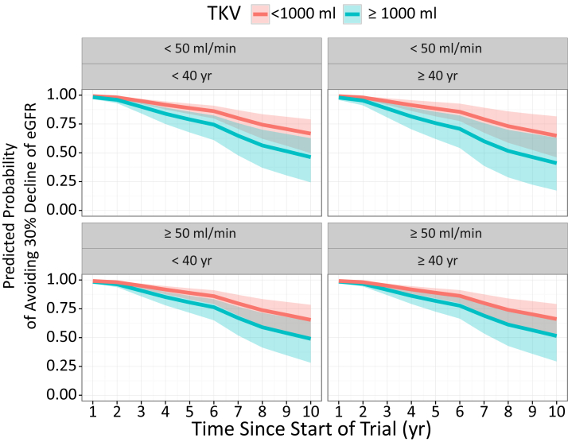
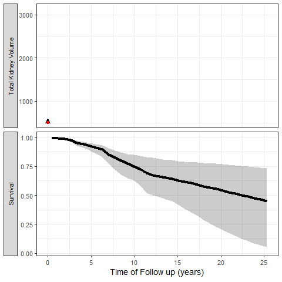

require(nlme)
fitLME <- lme(logtkv ~ MPYRS, random= ~ MPYRS | UDERID, data = alltkvdata,
control = list(msVerbose = 1, maxIter=100, msMaxIter=1000, niterEM=1000))
summary(fitLME )
####
Linear mixed-effects model fit by REML
Data: alltkvdatajfitmean
AIC BIC logLik
939.2572 974.1581 -463.6286
Random effects:
Formula: ~MPYRS | UDERID
Structure: General positive-definite, Log-Cholesky parametrization
StdDev Corr
(Intercept) 0.87413534 (Intr)
MPYRS 0.04581673 -0.478
Residual 0.13535305
Fixed effects: logtkv ~ MPYRS
Value Std.Error DF t-value p-value
(Intercept) 6.669682 0.03478784 1842 191.72454 0
MPYRS 0.051151 0.00234949 1842 21.77093 0
Correlation:
(Intr)
MPYRS -0.413
Standardized Within-Group Residuals:
Min Q1 Med Q3 Max
-5.263898609 -0.391074859 -0.006556208 0.378224483 3.912862812
Number of Observations: 2484
Number of Groups: 641 This is the second part of Qualification of Kidney Volume as a Drug Development Tool: Part 1. Here, I will continue covering the analysis framework and more specifically the joint modeling of longitudinal total kidney volume (TKV) and the outcomes of interest which were 30% decline of glomerular filtration rate (eGFR) or end-stage renal disease (ESRD) to ultimately qualify the model simulations as a drug development tool (DDT) for trial enrichment in patients with autosomal dominant polycystic kidney disease (ADPKD). Since the data is not public I will be using published outputs and share relevant code that can be applied in real-life analysis. For the record, here is a quote from the FDA Biomarker Qualification Review for Total Kidney Volume: “Based upon consideration of the strengths and limitations of the data, the Biomarker Qualification Review Team (BQRT) recommends that Total Kidney Volume (TKV) determined at baseline, in combination with patient age and baseline eGFR, can be qualified as a prognostic enrichment biomarker for autosomal dominant polycystic kidney disease (ADPKD) subjects at high risk for a progressive decline in renal function, defined as a confirmed 30% decline in eGFR.”
Of note that the FDA not only replicated the findings on the submitted registry data and the data generated via cross validation, but also using clinical trial data that were only available internally to the FDA.
In a first step, linear mixed-effect models with a random intercept were used to fit ln-transformed TKV values, keeping only patients with at least 2 TKV measurements separated by at least 6 months apart. Baseline TKV was defined as the first TKV measurement for a subject, whereas baseline age was the age associated with the first TKV measurement. Correlated random effects on slope and intercept was used
In a second step, a placeholder time to event model is set with baseline eGFR (EGFRBSL) and Age (AGERFST) which were deemed important in the first part analysis. The log of Total Kidney Volume will enter the model via the joint modeling link. The JM package has a function named jointModel with default link parameterization = value. Other supported possibilities are slope or both. More advanced options can be built using the derivForm argument for example the AUC of log of TKV up to the time of the event.

The baseline risk function was chosen to be piecewise linear with equally-spaced lng.in.kn knots. The number of knots was incrementally increased till the AIC started to rise and or no improvement on the goodness of fit was noticed.
require(JM)
fitSURV <- coxph(Surv(MPYRS, EVFL) ~ 1 + EGFRBSL + AGERFST
,data=e30strictendpointj, x = TRUE)
fit.tkv_e30strict_allpiecewise5 <- jointModel(fitLME, fitSURV,timeVar="MPYRS",verbose=F,
method ="piecewise-PH-aGH",lng.in.kn=5)
fit.tkv_e30strict_allpiecewise10 <- jointModel(fitLME, fitSURV,timeVar="MPYRS",verbose=F,
method ="piecewise-PH-aGH",lng.in.kn=10)
fit.tkv_e30strict_allpiecewise12 <- jointModel(fitLME, fitSURV,timeVar="MPYRS",verbose=F,
method ="piecewise-PH-aGH",lng.in.kn=12)
anova(fit.tkv_e30strict_allpiecewise10,fit.tkv_e30strict_allpiecewise12,test=F)
anova(fit.tkv_e30strict_allpiecewise12,fit.tkv_e30strict_allpiecewise15,test=F)
###
AIC BIC log.Lik df
fit.tkv_e30strict_allpiecewise10 2367.87 2457.13 -1163.93
fit.tkv_e30strict_allpiecewise12 2358.03 2456.21 -1157.01 2
fit.tkv_e30strict_allpiecewise15 2363.56 2475.13 -1156.78 3
summary(fit.tkv_e30strict_allpiecewise12)
###
Call:
jointModel(lmeObject = fitLME, survObject = fitSURV, timeVar = "MPYRS",
method = "piecewise-PH-aGH", verbose = F, lng.in.kn = 12)
Data Descriptives:
Longitudinal Process Event Process
Number of Observations: 2484 Number of Events: 192 (30%)
Number of Groups: 641
Joint Model Summary:
Longitudinal Process: Linear mixed-effects model
Event Process: Relative risk model with piecewise-constant
baseline risk function
Parameterization: Time-dependent
log.Lik AIC BIC
-1157.014 2358.028 2456.215
Variance Components:
StdDev Corr
(Intercept) 0.8733 (Intr)
MPYRS 0.0457 -0.4736
Residual 0.1353
Coefficients:
Longitudinal Process
Value Std.Err z-value p-value
(Intercept) 6.6684 0.0348 191.8738 <0.0001
MPYRS 0.0516 0.0024 21.7459 <0.0001
Event Process
Value Std.Err z-value p-value
EGFRBSL 0.0101 0.0032 3.1880 0.0014
AGERFST 0.0004 0.0077 0.0519 0.9586
Assoct 0.8457 0.1204 7.0233 <0.0001
log(xi.1) -10.9734 0.9986 -10.9884
log(xi.2) -10.0710 0.9932 -10.1405
log(xi.3) -8.9790 0.9969 -9.0065
log(xi.4) -10.0879 0.9980 -10.1083
log(xi.5) -9.8822 0.9998 -9.8845
log(xi.6) -10.0449 1.0076 -9.9692
log(xi.7) -9.0142 0.9962 -9.0486
log(xi.8) -9.2201 0.9981 -9.2377
log(xi.9) -9.6585 1.0222 -9.4486
log(xi.10) -9.4987 1.0476 -9.0670
log(xi.11) -9.6459 1.0720 -8.9978
log(xi.12) -9.3686 1.0457 -8.9588
log(xi.13) -10.4570 1.1220 -9.3198
Integration:
method: (pseudo) adaptive Gauss-Hermite
quadrature points: 3
Optimization:
Convergence: 0 Notice how in the output of the summary of the jointmodel the association Assoct between the predicted “value” and hazard of the event is highly significant <0.0001. To get the hazard ratio and its 95% confidence interval we exponentiate the output of confint. We can also output automated diagnostics using an automatic plot method on JM objects.
exp (confint(fit.tkv_e30strict_allpiecewise12 ,parm="Event"))
2.5 % est. 97.5 %
EGFRBSL 1.0039020 1.010162 1.016460
AGERFST 0.9855089 1.000397 1.015510
par(mfrow=c(2,2))
plot(fit.tkv_e30strict_allpiecewise12,add.KM=T,ask=F)
Next, we want to retest within the joint modeling framework whether interactions between, Age, eGFR and TKV are needed which can be done using the interFact argument for example below we are testing the interaction between baseline eGFR and log of TKV value:
fitSURV <- coxph(Surv(MPYRS, EVFL) ~ 1 + EGFRBSL + AGERFST
,data=e30strictendpointj, x = TRUE)
fit.tkv_e30strict_all_interactiontkvegfr <- update(fit.tkv_e30strict_allpiecewise12,
control=list(optimizer="nlminb"), verbose=T,
interFact =list(value=~EGFRBSL,data=e30strictendpointj)
)
summary(fit.tkv_e30strict_all_interactiontkvegfr) The final model included interaction in the survival sub model EGFRBSL:AGERFST:
fitLME <- lme(logtkv ~ MPYRS, random= ~ MPYRS | UDERID, data = alltkvdatajfitmean,
control = list(msVerbose = 1, maxIter=100, msMaxIter=1000, niterEM=1000))
fitSURV <- coxph(Surv(MPYRS, EVFL) ~ 1 + EGFRBSL + AGERFST + EGFRBSL:AGERFST,
data=e30strictendpointj, x = TRUE)
jointfinalmodelval <- jointModel(fitLME, fitSURV,timeVar="MPYRS",verbose=F,
method ="piecewise-PH-aGH",lng.in.kn=12,
control=list(optimizer="nlminb")
)The model was also internally validated using standard 5-fold cross validation and the FDA took the extra step to externally validated against data I have never seen. Below I include the figures that were part of the paper:


The most exciting application of Joint Models is the capability to simulate trajectories of time and illustrate its impact on the probability of the event:
alltkvdatajfitmean[alltkvdatajfitmean $UDERID==2250,]
# conditional survival probabilities for Patient 2250 using Monte Carlo
set.seed(123) # we set the seed for reproducibility
ND <- alltkvdatajfitmean[alltkvdatajfitmean$UDERID == 2250 , ]
survPreds <- vector("list", nrow(ND))
for (i in 1:nrow(ND)) {
set.seed(123)
survPreds[[i]] <- survfitJM(jointfinalmodel , newdata = ND[1:i, ],idVar="UDERID")
}
# plot of the dynamic survival probabilities
par(mfrow = c(2, 2), oma = c(0, 2, 0, 2))
for (i in c(1,2,4,5)) {
plot(survPreds[[i]], estimator = "median", conf.int = TRUE,
include.y = TRUE,fill.area=T, main = paste("Follow-up time:",
round(survPreds[[i]]$last.time, 1)))
arrows(ND$LASTTIMESEEN[1], 1, ND$LASTTIMESEEN[1], 0.9, col= "red",length=0.1)
}
mtext("log Kidney Volume", side = 2, line = -1, outer = TRUE)
mtext("Survival Probability", side = 4, line = -1, outer = TRUE)
We can also simulate clinical trial inclusion criteria and see how these patients TKV trajectories and probabilities of events can be projected:

To conclude this blog I wanted to redo the dynamic predictions using ggplot2 and gganimate
Code
library(gganimate)
set.seed(123) # we set the seed for reproducibility
ND <- alltkvdatajfitmean[alltkvdatajfitmean$UDERID == 1557 , ]
e30strictendpointj[e30strictendpointj$UDERID == 1557 , ]
survPreds <- vector("list", nrow(ND))
for (i in 1:nrow(ND)) {
set.seed(123)
survPreds[[i]] <- survfitJM(jointfinalmodel , newdata = ND[1:i, ],idVar="UDERID")
}
survPreds1 <- as.data.frame(survfitJM(
jointfinalmodel ,
newdata = ND[1:1, ],idVar="UDERID")$summaries)
survPreds2 <- as.data.frame(survfitJM(
jointfinalmodel ,
newdata = ND[1:2, ],idVar="UDERID")$summaries)
survPreds3 <- as.data.frame(survfitJM(
jointfinalmodel ,
newdata = ND[1:3, ],idVar="UDERID")$summaries)
survPreds1$frame <- 1
survPreds2$frame <- 2
survPreds3$frame <- 3
survPredsall <- rbind(survPreds1,survPreds2,survPreds3)
names(survPredsall)<- c("times","Mean","Median","Lower","Upper","frame")
ggplot(survPredsall,aes(times,Median))+
geom_line()+
facet_grid(~frame)
survPredsall$facet <- "Survival"
NDobserved <- rbind(ND[1:1,c("MPYRS","logtkv")],
ND[1:2,c("MPYRS","logtkv")],
ND[1:3,c("MPYRS","logtkv")])
NDobserved$frame <- c(1,2,2,3,3,3)
NDobserved$facet <- "Total Kidney Volume"
fitteddata1<- data.frame(
times= as.vector(unlist(survPreds[[1]]$fitted.times))[1],
fittedy= as.vector(unlist(survPreds[[1]]$fitted.y))[1],
logtkv= ND[1:1,"logtkv"]
)
fitteddata1$frame<-1
fitteddata2<- data.frame(
times= as.vector(unlist(survPreds[[2]]$fitted.times))[1:2],
fittedy= as.vector(unlist(survPreds[[2]]$fitted.y))[1:2],
logtkv= ND[1:2,"logtkv"]
)
fitteddata2$frame<-2
fitteddata3<- data.frame(
times= as.vector(unlist(survPreds[[3]]$fitted.times))[1:3],
fittedy= as.vector(unlist(survPreds[[3]]$fitted.y))[1:3],
logtkv= ND[1:3,"logtkv"]
)
fitteddata3$frame<-3
fitteddata<- rbind(fitteddata1,fitteddata2,fitteddata3)
fitteddata$facet <- "Total Kidney Volume"
fitteddata$logtkv <- NDobserved$logtkv
fulljoineddf <- full_join(survPredsall,fitteddata)
ggplot(fulljoineddf , aes(times, Median)) +
geom_point(aes(y = exp(fittedy)),size=3,shape="triangle") +
geom_line( aes(y = exp(fittedy)) , size=1, linetype="dashed") +
geom_point(aes(y=exp(logtkv)),size=2, color="red")+
geom_ribbon(aes(x=times,y=Median,ymin=Lower,ymax=Upper),alpha=0.25)+
geom_line( aes(x=times,y=Median),size=1.5)+
facet_grid(facet~frame,scales = "free_y",switch="y",as.table=FALSE)+
labs(y= "", x = "Time of Follow up (years)")+
theme_bw()+
theme(legend.position = "none",strip.placement = "outside",
axis.title.y.left = element_blank())
ggplot(fulljoineddf , aes(times, Median)) +
geom_point(aes(y = exp(fittedy)),size=3,shape="triangle") +
geom_line( aes(y = exp(fittedy)) , size=1, linetype="dashed") +
geom_point(aes(y=exp(logtkv)),size=2, color="red")+
geom_ribbon(aes(x=times,y=Median,ymin=Lower,ymax=Upper),alpha=0.25)+
geom_line( aes(x=times,y=Median),size=1.5)+
facet_grid(facet~.,scales = "free_y",switch="y",as.table=FALSE)+
labs(y= "", x = "Time of Follow up (years)")+
theme_bw()+
theme(legend.position = "none",strip.placement = "outside",
axis.title.y.left = element_blank())+
transition_states(frame, transition_length = 3,
state_length = 1,
wrap = FALSE)